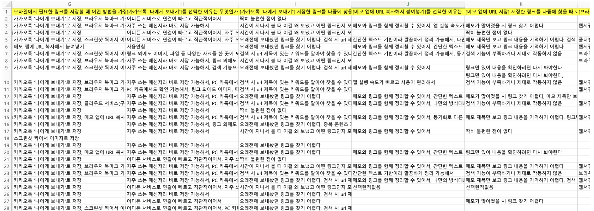
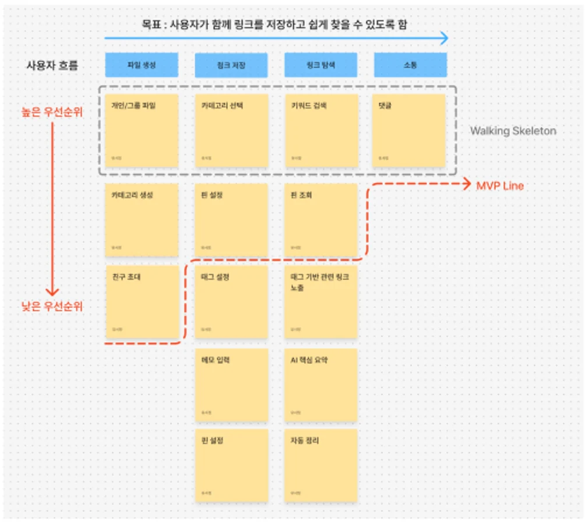
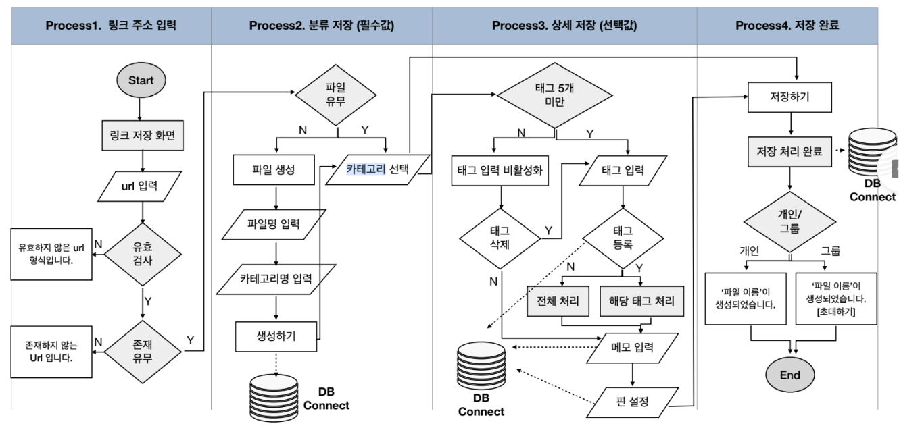
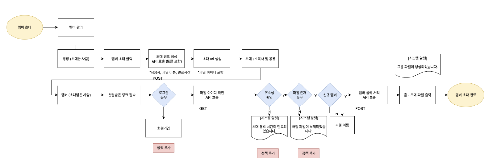
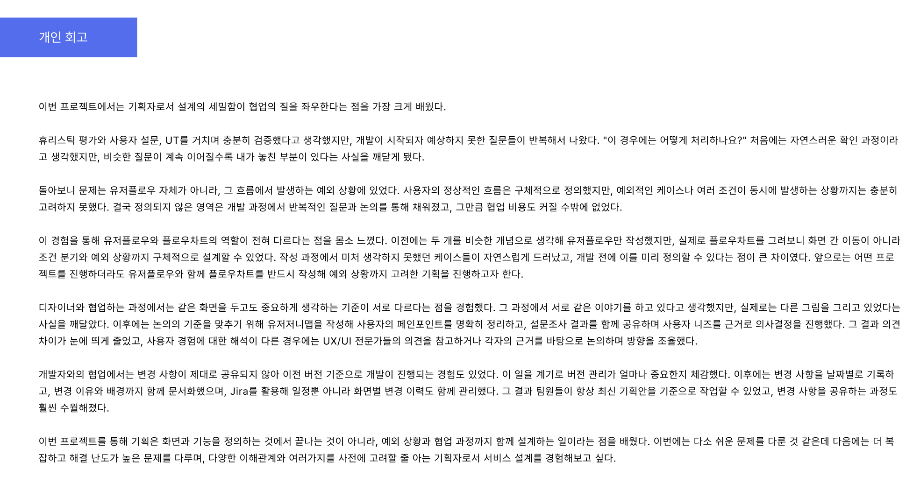

01발견한 문제
단톡방과 SNS에 흩어진 링크는 저장한 뒤 다시 찾기 어렵고, 여러 사람이 함께 보는 콘텐츠일수록 맥락이 사라졌습니다.
여럿이 콘텐츠를 저장하고 탐색하는 그룹 콘텐츠 아카이빙 앱
쏙은 흩어진 링크를 그룹 안에서 함께 저장·분류·공유하고, 필요할 때 빠르게 다시 찾도록 설계한 콘텐츠 아카이빙 앱입니다. PM으로 사용자 조사부터 MVP 범위, UX/UI·기능 설계와 출시 관리까지 리딩했습니다.
단톡방과 SNS에 흩어진 링크는 저장한 뒤 다시 찾기 어렵고, 여러 사람이 함께 보는 콘텐츠일수록 맥락이 사라졌습니다.
사용자에게 맞는 저장 구조와 그룹 단위의 공유 흐름을 제공하면, 콘텐츠를 다시 찾는 시간을 줄이고 재탐색 경험을 개선할 수 있다고 보았습니다.
설문 결과를 바탕으로 저장·카테고리·키워드·링크 탐색을 MVP로 우선순위화하고, 유저플로우·화면 설계·A/B 테스트로 검증했습니다.
문제 정의부터 출시까지, 서비스를 만들며 거친 순서대로 담았습니다.

화면 중심의 논의만으로는 사용자 경험에 대한 견해를 맞추기 어려웠습니다. 설문 결과를 바탕으로 페르소나와 유저저니맵을 만들어 디자이너와 같은 기준으로 UX를 판단했습니다.
출퇴근 시간에 여러 사이트에서 마케팅 정보글을 모으고, 업무에 참고할 글은 카카오톡 ‘나에게 보내기’로 전송해 두었다가 필요할 때 찾아봐요.
친구 5명과 3박 4일 제주도 여행을 계획하며 숙소, 맛집, 카페, 놀거리 링크를 각자 찾아 공유하고 있어요.
목표 — 정보를 효과적으로 분류해 저장하고, 나중에 쉽게 찾아 업무 흐름이 끊기지 않게 한다
| 단계 | 행동 | 감정 | 페인포인트 | 솔루션 |
|---|---|---|---|---|
| 1. 링크 발견 및 저장 | 브런치 글 탐색 → 여러 글을 카톡 ‘나에게 보내기’ | 호기심 → 안도감 | 링크만 전송되어, 어떤 내용인지·왜 보냈는지 알려면 다시 들어가 읽어야 함 | 링크 저장 시 제목 수정, 메모 기능 |
| 2. 카톡 접속 | 업무 중 참고하려고 나와의 채팅방 접속 | 안도감 → 혼란 | 여러 정보가 한곳에 쌓여 해당 링크를 찾기 어려움 | 중요·고정·나중에 볼 것 등 분류 기능 |
| 3. 링크 검색 | 키워드로 검색 | 혼란 → 불안, 불편 | 정확한 제목·내용을 입력해야 검색되고, 불필요한 텍스트까지 결과에 섞임 | 제목·내용·카테고리·태그·메모 통합 검색 |
| 4. 링크 파일 탐색 | 링크 파일에 접속해 스크롤로 탐색 | 불안, 불편 → 스트레스 최고조 | 주제가 다른 링크 사이에 분류 기능이 없어 찾을 때까지 스크롤 반복, 필요 없어진 링크도 함께 쌓임 | 파일·카테고리·태그 세분화, 주기적인 자동 정리 |
| 5. 링크 발견 | 링크를 열어 내용 확인 | 스트레스 → 지침, 피로 | 겨우 찾은 뒤에도 필요한 부분을 찾으려 여러 번 읽어 시간이 더 걸림 | AI 요약, 인사이트 제공 |
유저저니맵을 디자인 산출물의 기준으로 공유해, 기획과 디자인 사이의 UX/UI 의사결정 기준을 통일하고 협업 효율을 높였습니다.
초기 기능 범위가 넓어 MVP의 핵심 가치가 흐려질 우려가 있었습니다. 워킹 스켈레톤 방식으로 “함께 저장하고 쉽게 찾는다”는 핵심 경험을 먼저 검증할 수 있도록 기능을 선별하고 우선순위를 정했습니다.
| 사용자 흐름 | 기능 | 범위 | 사용자 요구사항 |
|---|---|---|---|
| 파일 생성 | 개인 / 그룹 파일 | MVP · 핵심 | 링크를 개인 또는 함께 쓰는 그룹 단위로 모은다 |
| 파일 생성 | 카테고리 생성 | MVP | 파일 안에서 주제별 카테고리를 만든다 |
| 파일 생성 | 친구 초대 | MVP | 초대 링크로 그룹 파일에 구성원을 참여시킨다 |
| 링크 저장 | 카테고리 선택 | MVP · 핵심 | 저장할 때 파일과 카테고리를 지정한다 |
| 링크 저장 | 핀 설정 | MVP | 중요한 링크를 핀으로 표시한다 |
| 링크 저장 | 태그 설정 · 메모 입력 | MVP 이후 | 태그와 짧은 메모로 저장 맥락을 남긴다 |
| 링크 탐색 | 키워드 검색 | MVP · 핵심 | 저장한 링크를 키워드로 다시 찾는다 |
| 링크 탐색 | 핀 조회 | MVP | 핀 표시한 링크만 모아 본다 |
| 링크 탐색 | 태그 기반 관련 링크 · AI 핵심 요약 · 자동 정리 | MVP 이후 | 관련 링크를 이어 보고, 열기 전에 핵심을 파악한다 |
| 소통 | 댓글 | MVP · 핵심 | 링크 단위로 구성원과 의견을 나눈다 |

저장 과정의 입력 부담을 줄이면서도, 개발 중 “이 경우는 어떻게 하나요?”가 나오지 않도록 기능별 처리 기준과 예외를 함께 정의했습니다.
| 화면 ID | 구분 | 주 기능 | 처리 로직 | 입력값 | 출력값 | 예외 | 비고 |
|---|---|---|---|---|---|---|---|
| SAVE-01 | 링크 저장 | URL 검증 및 미리보기 생성 | 붙여넣은 URL의 형식과 존재 여부를 확인한 뒤 메타데이터를 조회한다 | URL | 제목 · 썸네일 미리보기 | 형식 오류 또는 존재하지 않는 주소는 안내 후 재입력 | 메타데이터가 없으면 우선순위에 따라 대체값 적용 |
| SAVE-02 | 분류 저장 | 파일 · 카테고리 선택 | 파일과 카테고리를 선택한 뒤 링크 저장 위치를 결정한다 | 파일 ID · 카테고리 ID | 선택된 저장 위치 | 파일이 없으면 파일 생성 흐름으로 이동 | 필수 입력 |
| SAVE-03 | 상세 저장 | 태그 · 메모 · 핀 설정 | 선택 입력값을 링크 정보에 추가한다 | 태그 · 메모 · 핀 여부 | 링크 부가 정보 | 태그 최대 5개 · 중복 태그 미등록 · 메모 최대 20자 | 선택 입력 |
| SAVE-04 | 저장 완료 | 개인 · 그룹 파일 저장 | 저장 요청 후 파일 유형에 따라 결과를 안내한다 | 링크 정보 · 파일 유형 | 상세 화면 · 토스트 메시지 | 실패 시 입력 내용 유지 후 재시도 안내 | 개인/그룹 안내 문구 분기 |
| GROUP-01 | 그룹 공유 | 초대 링크 생성 · 참여 | 초대 토큰을 검증하고 회원 여부에 따라 그룹 파일 참여를 처리한다 | 파일 ID · 초대 토큰 | 그룹 파일 참여 완료 | 만료 · 삭제된 파일 · 기존 멤버를 각각 안내 | 랜딩페이지 · 앱 진입 연동 |
| AI-01 | 핵심 요약 | 링크 본문 요약 요청 | 본문 텍스트를 추출해 요약을 생성하고 링크 ID와 함께 저장한다 | 링크 ID · 본문 텍스트 | 핵심 요약 모달 | 불러올 수 없는 링크는 오류 메시지 안내 | 하루 3회 제공 · 유용성 피드백 |


| 과업 | 시나리오 | 목표 행동 | 검증 포인트 · 사후 질문 |
|---|---|---|---|
| 공유 파일 생성하기 | 여러 사람과 함께 볼 새 파일을 만들고 카테고리 4개를 추가한 뒤 공유한다. | 공유 파일 선택 → 파일 생성 → 파일 이름 입력 → 카테고리 이름 입력 → 키보드 완료 × 4 → 생성 → 홈 · 토스트 메시지 → 공유하기 | 카테고리 4개 입력 흐름을 인지하는지 확인 ① 공유 파일 생성 흐름이 자연스러웠나요? ② 어느 부분이 부자연스러웠나요? ③ 이 기능을 어떤 상황에서 쓰고 싶었나요? |
| 링크 저장하기 | 복사한 링크를 지정한 파일과 카테고리에 저장하고 태그·메모·핀 설정까지 완료한다. | 링크 추가 → 붙여넣기 → 파일 열기 → 카테고리 선택 → 태그 추가 → 메모 입력 → 핀 설정 → 저장 → 파일 상세 · 토스트 메시지 | 저장 과정의 번거로움 확인 ① 링크 저장이 번거로웠나요? ② 어느 부분이 번거로웠나요? |
| 저장한 링크 다시 찾아 보기 | 어제 저장한 ‘명언’ 링크를 찾아 열어 본다. | 최근 저장 · 검색 · 핀 · 파일 탐색 중 선택 → 링크 카드 진입 → 원문 조회 | 주요 탐색 경로의 예측 가능성 확인 ① 찾는 경로를 쉽게 예상할 수 있었나요? ② 복잡하거나 어려웠던 이유는 무엇인가요? |
| 내 파일을 공유 파일로 바꾸기 | 내 파일을 ‘민지’에게 공유할 수 있도록 공유 파일로 전환하고 초대한다. | 내 파일 → 설정 → 공유 전환 → 전환하기 → 멤버 추가 → 공유하기 → 민지 선택 | 숨겨진 공유 전환 기능의 발견성 확인 ① 공유하기 개념이 직관적이었나요? ② 버튼까지의 흐름에서 막힌 부분이 있었나요? |
| 자동정리 기능 설정하기 | 자동정리 기간을 7일로 설정하고 필요한 링크를 복원한다. | 자동정리 페이지 진입 → 기간 선택 → 복원 알림 → 복원하기 | 기능의 역할과 아이콘 인지 확인 ① 자동정리 기능을 쉽게 이해했나요? ② 기간 설정 과정이 어려웠나요? ③ 실제 도움이 될 것 같나요? |
| 핵심요약 보기 | 지정한 링크의 핵심요약만 확인한다. | 링크 리스트 → 핵심요약 버튼 → 모달 노출 | 핵심요약 진입 경로 확인 ① 전체적으로 쏙 서비스는 어떤 느낌이었나요? |
협업형 링크 아카이빙 MVP를 출시하고, A/B 테스트로 저장 과업 수행 시간을 평균 44% 단축하고 미스클릭률을 23% 개선했습니다.

정상 흐름만으로는 개발 과정의 질문을 막기 어려웠습니다. 이후에는 조건 분기와 예외 상황까지 유저플로우에 포함해 개발 전 합의의 기준으로 삼았습니다.
화면을 보는 관점이 다를 때 설문과 유저저니를 함께 보며 사용자 니즈를 기준으로 의사결정을 정리했습니다.
변경 이유와 화면별 수정 이력을 Jira로 관리해 팀이 항상 최신 기획안을 기준으로 작업할 수 있도록 했습니다.